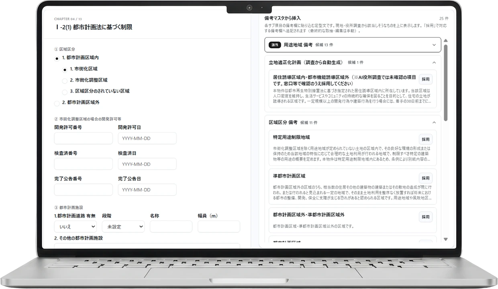

047つの機能
備考欄
調べた内容から、備考の文章を自動で提案・挿入します。
減らせる手間備考の文章をゼロから考える手間が減ります。

売買契約の重説300分→15分※ グループ会社での試算値です
7つの機能 04 ／ 備考欄を自動入力
法令やライフラインなどの調査情報をもとに、
備考欄の文章作成・入力を支援します。
047つの機能
調べた内容から、備考の文章を自動で提案・挿入します。
減らせる手間備考の文章をゼロから考える手間が減ります。


NEXT
まずは、いつもの一件で確かめる。現在の書式・資料・対象地域をもとに、ご利用イメージをご相談ください。